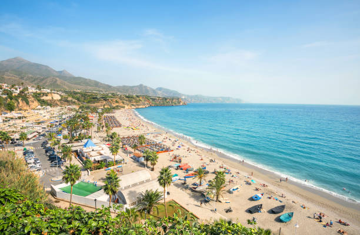

La playa Costa del Sol es una joya natural ubicada en el departamento de La Paz, en la zona central de El Salvador.
A diferencia de las formaciones rocosas y farallones que caracterizan las playas del oriente y el occidente del país, esta área está rodeada por un hermoso valle, en el que es fácil divisar algunos de los más hermosos y majestuosos volcanes salvadoreños, a cuyos pies hay mares de ondulantes cañales y otros cultivos locales.
La Costa del Sol ofrece al visitante una perfecta combinación de atractivos que la hacen un destino de playa de clase mundial. Si buscas un lugar para disfrutar del sol desde el amanecer al atardecer, una interminable playa de arena blanca, todo tipo de alojamientos, un muestra amplia de la cocina salvadoreña e internacional, y los atractivos adicionales de estar rodeado por un inmenso estero navegable y olas para practicar buen surf, esta debe ser tu elección.
Esta playa tiene 15 kilómetros de longitud, y en cuanto a la práctica del surf se caracteriza por los bancos de arena que se forman en toda la zona de rompiente; los cuales generan olas rápidas, que quiebran tanto a la derecha como a la izquierda, usualmente tubulares, y verdaderamente retadoras cuando sopla un poco de viento del norte, lo que eleva sus crestas y aumenta el tamaño de la pared para maniobrar, la cual llega a alcanzar hasta 9 pies de altura (3 metros).
La mejor época del año para surfear la Costa del Sol es de noviembre a enero, cuando los oleajes del océano pacífico sur no son tan grandes y poderosos, lo que permite que la ola rompa con menor velocidad y mayor suavidad. Incluso se forman remansos donde las olas son pequeñas y espumosas, ideales para iniciarse en la práctica de este emocionante deporte.

Si decides visitar este maravilloso destino, desde San Salvador debes tomar la autopista a Comalapa, al llegar a La Paz, te incorporas a la carretera litoral, hacia el occidente, y luego a la calle de La Herradura, que te conduce directo al bulevar Costa del Sol.